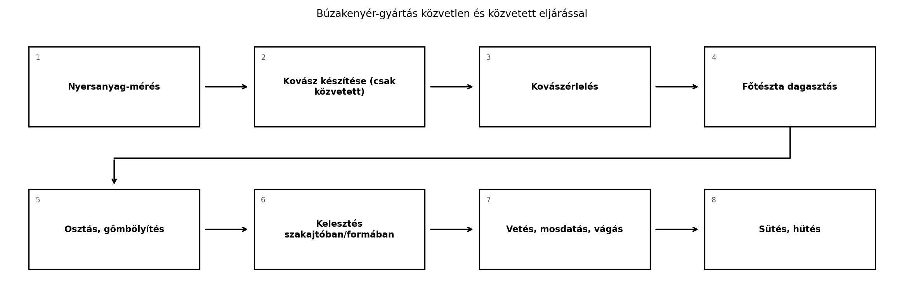

Képzeld el, hogy hajnal négy óra van, és a pékségben három különböző kenyér rendelését kell egyszerre elindítani: egy klasszikus, 1 kg-os formázott búzakenyeret, egy 50 dkg-os kerek, ropogós héjú parasztkenyeret és egy nagyüzemi, 500 darabos szeletelt fehér kenyeret. A lisztek ugyanabból a silóból jönnek, a dagasztógép ugyanaz, a kemence ugyanaz – mégis mindhárom termék más utat jár be. Ha a közvetlen eljárást kevered a közvetett eljárás lépéseivel, vagy rosszul időzíted a kovász beérését, az egyik kenyér savanyú lesz, a másik lapos, a harmadik túlkelt. Ebben az alfejezetben a búzakenyér és a fehér kenyér előállítását tanulod meg lépésről lépésre, hogy a dagasztástól a hűtésig tudatosan tudd vezetni a gyártást, ne pedig „majd a kemence kijavítja” alapon.
A búzakenyér gyártása egy időben futó, több állomásos folyamat. A közvetlen eljárás egyszerű, rövid sor; a közvetett eljárás hosszabb, de gazdagabb ízt és jobb eltarthatóságot ad.

Közvetlen eljárásnál a kovászlépés kimarad, közvetett eljárásnál a kovász adja a termék jellegét.
Továbbvitt eredmény. Az itt megtanult búzakenyér-eljárás, a sütés utáni ellenőrzés és a dokumentálás kell a Félbarna, büfé- és összetételre utaló nevű kenyerek, a Próbasütés, térfogat, fajlagos térfogat és alaki hányados és az Elméleti tételek: technológia, higiénia, minőség alfejezetekhez.
Definíció. A búzakenyér olyan kenyér, amelynek jellemző nyersanyaga a búzaliszt, és a tészta szerkezetét elsősorban a búzasikér fehérjeváza adja. A fehér kenyér olyan búzakenyér, amely alacsony hamutartalmú, világos búzalisztből (hazai jelölésben jellemzően BL 80 (fehér kenyérliszt) – ellenőrizendő: a hatályos Magyar Élelmiszerkönyv szerinti lisztjelölés) készül, és a bélzete világos, a héja aranysárga–világosbarna.
A búzakenyér és fehér kenyér közötti határ az üzemi gyakorlatban a liszt hamutartalma, a korpa- és őrleménytartalom, valamint az érzékszervi kép alapján húzható meg. A fehér kenyér bélzete világos, pórusai egyenletesebbek, héja vékonyabb; a búzakenyér lehet kissé teltebb színű, és tartalmazhat világos búzaliszt mellett kisebb mennyiségű teljes kiőrlésű vagy korpás őrleményt, ha a termék jellege ezt megengedi. A pontos megnevezésre a hatályos Élelmiszerkönyv és a termék gyártmánylapja az irányadó.
A tésztakészítési eljárások részletes elméletét a Közvetlen, közvetett és különleges tésztakészítési eljárások alfejezet tárgyalja. Itt a búzakenyér-gyártás gyakorlatára alkalmazzuk.
Közvetlen eljárás. Minden nyersanyagot egy dagasztásban dolgozunk össze. A folyamat egyszerű, könnyen szervezhető, de a termék aromája általában kevésbé összetett, és az eltarthatósága rövidebb. Akkor használjuk, ha a gyártási terv rövid időt enged, vagy ha a liszt erős, jó gázvisszatartó képességű, és a termék jellege nem kíván kovászos ízt.
Közvetett eljárás. Először kovászt készítünk a teljes lisztmennyiség egy részéből, vízzel és élesztővel vagy kovászkultúrával. A kovász érlelése után a főtésztához adjuk a többi nyersanyagot, így a termék a kovászérés során képződött savakból, aromákból és enzimatikus bontástermékekből profitál. Búzakenyérnél a kovász a teljes liszt 20–30 m/m%-ából készül, és 24–28 °C-on, jellemzően 1–3 órán át érlelődik. A pontos időt a kovász érettsége, a pH és az üzemi technológiai lap határozza meg.
A közvetett eljárású búzakenyér esetében a kovász savanyítja kissé a tésztát, javítja a héj színét, a bélszerkezetet és a termék frissen tartását. Ha a kovászt túlérleljük, a savak feleslege gyengítheti a sikérvázat, és a kenyér ragacsos, lapos lesz.
Osztás és gömbölyítés. A búzakenyér tésztáját a feladási tömegre osztjuk, majd gömbölyítjük. A gömbölyítés során sima, feszes, zárt felületet képzünk, amely a későbbi hosszformázást vagy formába helyezést előkészíti. A kézi osztás és gömbölyítés módját a Kézi osztás, gömbölyítés és hosszformázás alfejezet tanítja.
Alakítás. A formázott kenyérnél a gömbölyített darabot rövid pihentetés után hosszformázzuk, majd a formaleválasztó olajjal vékonyan kikent vagy sütőpapírral bélelt formába helyezzük (ha vajjal kenünk, a tejet allergénként jelölni kell) a zárással lefelé. A szabadon sült (szakajtós) kenyérnél a gömbölyített vagy hosszformázott darabot a szakajtóba tesszük; itt a zárás felülre, a sima felület alulra kerül, mert a kiborítás után a sima felület kerül felfelé. Ha a formában a zárás felfelé marad, az sütés közben szétnyílhat.
Kelesztés. A búzakenyér tésztáját jellemzően 30–38 °C-on, 70–80 % relatív páratartalom mellett kelesztjük (tanulási példa, ellenőrizendő: üzemi technológiai lap). A kelesztési idő termék- és tésztafüggő, jellemzően 45–70 perc. Az érett tészta térfogata a kiindulásihoz képest jól láthatóan megnő, a felülete száradás nélkül rugalmas marad, ujjal óvatosan benyomva a nyomás lassan, de érezhetően visszatér. A kelesztés hibáit az A megkeltség jelei, kelesztési hibák és vetés-előkészítő műveletek alfejezet tárgyalja.
A vetés a tészta kemencébe helyezése. Előtte a vetés-előkészítő műveletek biztosítják a szép héj kialakulását és a szabályozott tésztaemelkedést.
Mosdatás. A szabadon sült és formában sült kenyeret is lekenhetjük vízzel, tojásos-vizes keverékkel vagy keményítőoldattal. A vízzel való lekenés célja a felület nedvesen tartása, a fénylő héj és a jobb gőzhatás. A tojásos kenés fényesebb, sötétebb héjat ad, de tojásallergént visz a termékbe. A mosdatás történhet ecsettel vagy szórófejjel; a túlzott nedvesítés foltosságot okoz, a kimaradt rész matt marad.
Vágás. A vágás (bemetszés) a kenyér felületén ejtett szabályozott metszés. A vágás célja, hogy a sütés első perceiben keletkező gőz és tésztafeszültség a vágásnál engedjen utat, ne a héj véletlenszerű helyen repedjen. A vágás mélysége, iránya és száma a termék jellegétől függ: kerek kenyérnél kereszt-, csillag- vagy négyzetvágást, hosszú kenyérnél hosszanti vagy ferde, egymást követő vágásokat alkalmazunk. A vágást éles, vékony pengével vagy erre kialakított vágóeszközzel végezzük; tompa eszköz roncsolja a felületet, és a vágás nem nyílik ki szépen.
A vágás minőségét a minta mellett a penge szöge, a vágás mélysége és iránya határozza meg. Az ábra felső sora a jellemző mintákat mutatja: hosszanti vágás a hasított kenyéren (1), négyzetes vágás a cipón (2), ferde, egymást kb. harmadnyi hosszon átfedő vágások a bagetten (3) és kereszt- vagy csillagvágás kerek kenyéren (4). Az alsó sor bal oldala metszetben mutatja a penge tartását: laposan, kb. 30–45°-os szögben tartva a vágás egyik széle felemelkedik, és ropogós „fül” képződik (5); merőlegesen tartva a nyílás szimmetrikus (6). A vágás mélysége tanulási példaként kb. 0,5–1 cm (ellenőrizendő: üzemi technológiai lap).
A jobb alsó rész az eredményt hasonlítja össze: a helyes vágás szabályosan kinyílik, és fület képez; a behegedt vágás túlkelt vagy kiszáradt felületre, kevés gőzre utal, a szakadt, cikcakkos szél pedig tompa pengére vagy túl mély vágásra. Figyelem. A pengét mindig a testtől és a tartó kéztől elfelé vezetjük, a tartó kéz a vágás vonalán kívül marad (3. kép), a pengét használat után védőtokba tesszük. A HTML-kiadásban a „Minták”, „Penge szöge” és „Eredmény” gomb nagyítja ki az egyes részeket.
A búzakenyeret általában 210–240 °C körüli kemencehőmérsékleten sütjük (tanulási példa, ellenőrizendő: kemence- és termékspecifikus adat). A sütés elején gőzt adagolunk a kemencetérbe: a gőz a tészta felületén lecsapódik, a héj egy ideig rugalmas marad, így a kenyér a sütés elején nagyobbat tud emelkedni (kemencerugás, angolul oven spring). A gőz fényes, rugalmas héjat ad, és segíti a keményítő csillogó rétegének kialakulását. A gőzbevezetés néhány másodperces (tanulási példa: 6–12 s), a gőzt a sütés első 5–15 percében tartjuk a sütőtérben (tanulási példa), majd a sütőteret szellőztetéssel vagy a gőz elengedésével szárítjuk, hogy a héj ki tudjon keményedni.
Átsültség ellenőrzése. A kenyér akkor átsült, ha a belső maghőmérséklet elérte a legalább 96 °C-ot (jellemző mért érték 96–98 °C; tanulási példa, ellenőrizendő: üzemi HACCP-terv és termékpróba). A maghőmérsékletet kalibrált, élelmiszeripari maghőmérővel mérjük a termék geometriai közepén. A formában sült kenyérnél a forma alján kopogtatva a kongó, üreges hang utal az átsültségre (a tompa hang nyers bélre utal); ez érzékszervi gyorspróba, de nem helyettesíti a maghőmérőt.
A búzakenyér és fehér kenyér jellemző alakjai:
A késztermék tömege tipikusan 0,4–1,5 kg lehet, a hazai kenyérgyakorlatban gyakori az 1,0 kg-os, 0,75 kg-os, 0,5 kg-os és 1,5 kg-os kenyér. A tömegre vonatkozó jogi feltüntetést és tűrést a fogyasztói tájékoztatás és a mérésügyi előírások szerint kell tartani (ellenőrizendő: hatályos mérésügyi és fogyasztóvédelmi előírás, Magyar Élelmiszerkönyv). A tényleges mérés és tömegellenőrzés a Tömegellenőrzés és töltelékhányad alfejezetben kerül sorra.
Cél: 1 kg-os formázott búzakenyér készítése közvetett eljárással, kovászvezetéssel, szakaszos üzemi gyakorlatban.
Eszközök és anyagok: BL 80 búzaliszt, víz, só, élesztő vagy pékségi kovászkultúra, dagasztógép, mérleg, kelesztőforma vagy kenyérforma, kelesztőkamra, szakajtó vagy forma, vágópenge, ecset, maghőmérő, dokumentációs lap.
Higiénia. A munka megkezdése előtt tiszta munkaruhát, hajhálót és zárt cipőt veszünk fel. Az ékszereket levesszük, a kézen lévő sebet vízálló kötéssel fedjük. Alapos kézmosás után ellenőrizzük a munkafelület, a dagasztógép, a formák és a szakajtók tisztaságát. A nyersanyagok csomagolása sértetlen legyen, a lisztet idegen anyagtól mentesen adagoljuk. Betegség esetén élelmiszerrel nem dolgozhatunk.
Gépbiztonság. A dagasztógépet csak betanítás után, felügyelettel kezeljük. Üzem előtt ellenőrizzük a védőburkolatot, a reteszelést és a vészleállítót. Tisztítás, beavatkozás, tészta kivétele előtt a gépet leállítjuk, áramtalanítjuk, és megvárjuk, amíg a dagasztókar teljesen megáll. A futó gépbe nyúlni, a reteszelést áthidalni tilos.
Lépések:
Ellenőrzési pontok: a kovász érettsége, a tészta hőmérséklete, a feladási tömeg, a kelesztés mértéke, a sütőtér hőmérséklete, a gőzölés időtartama, a maghőmérséklet. Minden mért adatot a gyártási naplóba és a CCP-lapra írunk.
Tipikus hibák: a kovász túlérlelése savanyú ízt ad; a túl hideg tészta lassan kel; a túl meleg tészta ragacsos, és a kelesztés egyenetlen; a kelesztés kimaradása miatt a vágás nem nyílik ki; a gőzölés hiánya miatt a héj vastag és matt lesz.
Termék: Fehér búzakenyér, formában sült, késztömeg 1,0 kg, 10 darabos tétel.
| Nyersanyag | Lisztre vetített % | Mennyiség (kg) | Megjegyzés |
|---|---|---|---|
| BL 80 búzaliszt | 100 | 6,94 | Kovászhoz 25 % (1,74 kg), főtésztához 75 % |
| Víz | 62 | 4,30 | Kovászhoz és főtésztához osztva |
| Só | 2,0 | 0,14 | A főtésztához |
| Préselt élesztő | 2,0 | 0,14 | A kovászhoz és a főtésztához arányosan |
| Összesen (tészta) | — | 11,52 | Tanulási példa, a tényleges tésztatömeg a mérési és dagasztási veszteség szerint változhat |
Műveleti paraméterek: TA 162; kovásznagyság 25 m/m% a teljes lisztre; kovászérés 25 °C, 2,5 óra; főtészta dagasztás lassú 5 perc, gyors 8–10 perc; tésztahőmérséklet 27 °C; pihentetés 20 perc; feladási tömeg 1,14 kg (10 db × 1,14 kg = 11,4 kg; a 11,52 kg tészta ebből 0,12 kg tartalékot ad a dagasztási és osztási veszteségre); kelesztés 35 °C, 75 % relatív páratartalom, 55–65 perc; vetés előtt vágás hosszában; sütés 225 °C, gőzbevezetés vetés után 6–10 s, a gőzt kb. 10 percig a sütőtérben tartjuk, majd a csappantyút nyitjuk (tanulási példa, ellenőrizendő: üzemi technológiai lap), sütési idő 40 perc; hűtés rácsokon legalább 1,5 órát.
Allergén. A termék búzalisztet tartalmaz, ezért glutént tartalmaz. A receptúrában tojás és tej nem szerepel, de az üzemi környezetben por- és eszközkeresztszennyeződés lehetséges; gluténmentes termékekkel közös gyártósoron tilos a megfelelő elkülönítés nélkül készíteni. A fogyasztói tájékoztatásban a glutén jelölése kötelező (ellenőrizendő: 1169/2011/EU rendelet és a hatályos nemzeti szabályozás).
A feladási tömeg kiszámítását a Feladási tömeg, préstömeg és osztási számítások alfejezetből ismerjük, itt a búzakenyérre alkalmazzuk.
Számítás. Ha a késztömeg kg, a sütési veszteség 10 %, a hűlési veszteség 2 %, akkor a feladási tömeg:
Itt a sütési és a hűlési veszteséget is a feladási tömegre vetítjük, ezért összeadhatók: . (Ha a hűlési veszteséget a sült, meleg termék tömegére vetítenénk, a szorzatos képlet adna pontos értéket: ; lásd Feladási tömeg, préstömeg és osztási számítások.)
Tehát a feladási tömeg körülbelül 1,14 kg. A technológiai lapban a tésztatömeg és a darabszám alapján igazítjuk a pontos értéket.
Mértékegység-ellenőrzés: kg / dimenziótlan arány = kg, az eredmény kg-ban ésszerű, mert a feladási tömeg nagyobb, mint a késztömeg.
Második példa. Ha 10 darab 1 kg-os kenyeret kell készíteni, akkor a tésztából kg-ot kell feladni. Ha a tésztatömeg a dagasztás végén 11,52 kg, akkor a mérési pontosság mellett a 10 darab még kiadható, de a maradék 0,12 kg-ot le kell dolgozni vagy el kell számolni. A receptúra-átméretezésnél a lisztre vetített százalékokat használjuk, mert a liszt 100 %-os alapja minden tételnél arányosan növelhető.
Harmadik példa. A közvetett eljárásnál a kovász lisztjét elkülönítjük. Ha a teljes tészta lisztigénye 11,52 kg-os tésztánál a recept szerint 6,94 kg liszt, és a kovásznagyság 25 m/m%, akkor a kovász lisztje kg, a főtészta lisztje kg. A kovász TA-ja 200 esetén a kovászvíz megegyezik a kovászliszttel: kg; a főtészta vize a teljes vízből () a kovászvíz levonásával: . Az így kapott mennyiségeket a dagasztási naplóban rögzítjük.
HACCP. A búzakenyér-gyártás kritikus pontja a sütés, mert a maghőmérséklet elérése biztosítja a mikrobiológiai ártalom csökkentését. A kritikus határérték tanulási példaként: a maghőmérséklet legalább 96 °C a kenyér geometriai közepén (jellemző mért érték 96–98 °C), az üzemi HACCP-terv szerint ellenőrizendő. A monitoring során minden tételből, meghatározott számú darabnál maghőmérővel mérünk, és az eredményt CCP-lapon rögzítjük. Ha a hőmérséklet nem éri el a határt, a tételt visszatartjuk, visszavetjük vagy selejtezzük, és az okot kivizsgáljuk. A kelesztés és hűtés a búzakenyérnél leggyakrabban nem CCP, hanem ellenőrzési pont (CP), de ha az üzemi HACCP-terv a hűtést CCP-vé minősíti, akkor a hűtési hőmérsékletet is a terv szerint monitorozzuk. A nyersanyag-átvételnél a liszt, víz, élesztő és só minőségi igazolását, lejáratát és sérülésmentességét ellenőrizzük.
Egy tanpékségben a pék a közvetlen eljárásról közvetettre állította át a búzakenyeret, mert a vásárlók gyorsan száradó héjat és egyhangú ízt panaszkodtak. Az első próbánál a kovászt a teljes lisztből 60 m/m%-ra emelte, és 30 °C-on hagyta 5 órán át, mert így gondolta erősebbé a savanyúságot. A tészta dagasztás közben ragacsos lett, a kenyér a kemencében nem emelkedett, a héja túl sötétre színeződött. A hiba oka a kovász túlzott aránya és túlérése volt: a sok sav és a lebontott sikér gyengítette a vázat. A megoldás az lett, hogy a kovásznagyságot 25 m/m%-ra csökkentette, a kovász hőmérsékletét 25 °C-ra, az érlelést pedig 2–3 órára állította. A kenyér ekkor kellően aromás, jól emelkedő és ropogós héjú lett. A tanulság: a közvetett eljárás a paraméterek pontos betartásával javítja a terméket, de a nagyobb kovászmennyiség nem jelent automatikusan jobb minőséget.
A kész búzakenyér minőségi jellemzői:
A térfogat, a fajlagos térfogat és az alaki hányados mérését a Próbasütés, térfogat, fajlagos térfogat és alaki hányados alfejezet tárgyalja.
feladat (A). Sorold fel a búzakenyér-gyártás lépéseit közvetett eljárásnál a kovászkészítéstől a hűtésig.
feladat (A). Mi a különbség a mosdatás és a vágás között a vetés-előkészítésben?
feladat (B). Számítsd ki a feladási tömeget 0,75 kg-os késztömegű búzakenyérre, ha a sütési veszteség 10 %, a hűlési veszteség 2,5 %.
feladat (B). Átméretezd a technológiai lap receptúráját 15 darab 1 kg-os kenyérre: liszt, víz, só, élesztő mennyiségét lisztre vetített százalékban adtuk meg; a tészta valamennyi anyagának összegét is add meg.
feladat (C). A kovászt a teljes liszt 40 m/m%-ából készítették, 30 °C-on érlelik 6 órát. A kenyér lapos, ragacsos, savanyú. Mi lehet az ok, és mit változtatnál?
feladat (D). A kész 1 kg-os formában sült kenyér maghőmérséklete 88 °C, a héja sötétbarna, a formából nehezen jön ki. Hogyan döntesz a tételről, és milyen helyesbítő lépéseket teszel?
A lépések: kovász anyagának mérése, kovász keverése, kovász érlelése, főtészta anyagának mérése, főtészta dagasztás, tészta pihentetés, osztás, gömbölyítés, alakítás, kelesztés, vetés-előkészítés (mosdatás, vágás), sütés, hűtés.
A mosdatás a felület lekenése vízzel, tojásos vízzel vagy keményítőoldattal; célja a héj színének és fényének javítása. A vágás a felület bemetszése éles pengével; célja a sütés közbeni feszültség szabályozott elvezetése, hogy a héj a vágás mentén nyíljon, ne véletlenszerűen repedjen.
Adott: kg, , . Keresett: . Képlet: . Behelyettesítés: kg. Ellenőrzés: a feladási tömeg nagyobb, mint a késztömeg, mert a sütés és hűlés közben vizet veszít.
15 darab 1 kg-os kenyérhez a késztömeg 15 kg. A feladási tömeg darabonként 1,14 kg (10 % sütési és 2 % hűlési veszteség mellett), tehát a feladandó tésztatömeg kg. A technológiai lap lisztre vetített arányaival a liszt 100 %, a víz 62 %, a só 2 %, az élesztő 2 %. A tészta teljes tömegére vetítve az arányokat át kell számítani. A lisztre vetített százalékokból a liszt mennyisége kg; az összetevők összege kg, tehát kg liszt. Ebből víz kg, só kg, élesztő kg. Az összes tészta kg, egyezik. A dagasztási és mérési veszteséget az üzemi gyakorlat szerint kell figyelembe venni.
A hiba oka: a kovász túl nagy arányú (a búzakenyérnél a jellemző 20–30 m/m% helyett 40 m/m%), túl hosszú és túl meleg az érlelés. A sok sav és enzimatikus bontás gyengíti a sikérvázat, a tészta ragacsos, a kenyér lapos. Javítás: a kovásznagyságot 25 m/m%-ra csökkentjük, a kovász hőmérsékletét 25 °C-ra, az érlelési időt 2–3 órára állítjuk, és a kovász érettségét pH-méréssel is követjük (üzemi HACCP-terv szerint).
A 88 °C maghőmérséklet alul-sütésre utal, a sötétbarna héj pedig arra, hogy a kemence külső hője túl magas, vagy a termék a hőt nem kapta meg egyenletesen. A tételt vissza kell tartani, tilos kiszállítani. A CCP-lapon rögzíteni kell az eltérést. Helyesbítés: a kemence hőmérsékletét ellenőrizni, a terméket vissza lehet vetni további sütésre, vagy ha a belső állapot nem javítható, selejtezni kell. A megelőzés: a maghőmérő kalibráltsága, a kemence hőmérsékletének betartása, a tétel nagyságához illő sütési idő következetes betartása.
A búzakenyér és a fehér kenyér előállítása a dagasztástól a hűtésig szervezett folyamat. A közvetlen eljárás egyetlen dagasztással készül, rövid és egyszerű; a közvetett eljárás kovászt használ, ami a teljes liszt 20–30 m/m%-ából készül, 24–28 °C-on érlelődik. A tészta feldolgozása osztásból, gömbölyítésből, alakításból és kelesztésből áll; a szakajtóban kelesztett kenyérnél a zárás felülre kerül, formánál a zárás lefelé. A vetés-előkészítés mosdatásból és vágásból áll; a vágás a szabályozott feszültségmentesítést szolgálja. A sütés 210–240 °C-on kezdődik, az első szakaszban gőzöléssel, a kenyér maghőmérséklete 96–98 °C kell legyen. A késztermék tömegét, alakját, héját, bélzetét és ízét a gyártmánylap szerint ellenőrizzük. A továbbvitt eredmények: a búzakenyér-eljárás alkalmazása a félbarna és büfékenyerek gyártásánál, az átsültség mérése a minőségvizsgálatnál, a technológiai lap használata pedig a vizsgafelkészülésnél.